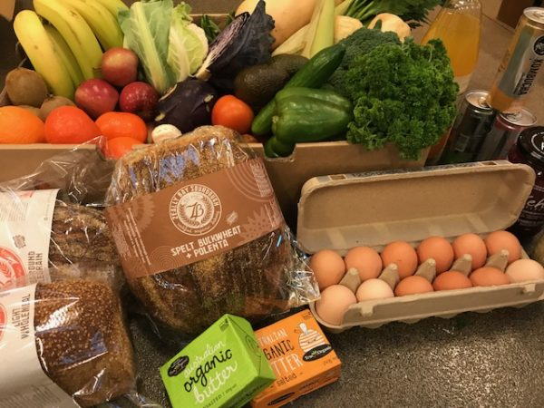
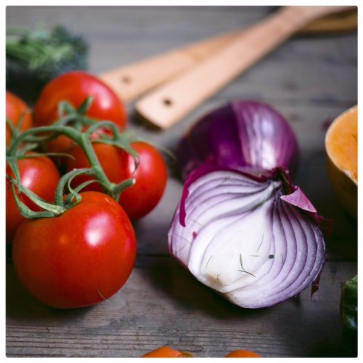

It is fresher
Organic produce is purchased fresh from farmers. At the supermarket, on the other hand, we don’t know how long the produce has been stored before it has been put on the shelves, nor for how long it is out on the floor. Produce from overseas may also have been travelling for a long time before it has even arrived in the country, let alone made it to the supermarket. How fresh can it be? The Organic Place purchases fruit and vegetables fresh from the farmer’s market every Thursday and delivers it straight to our customer’s door by the end of the day. You couldn’t get food any fresher unless you grew it yourself!
It is free from chemical and pesticides
Farmers who follow organic principles do not add chemicals to improve or fasten its growth. Organic fruit and vegetables follow the seasonal cycle and are only available when they grow naturally. In our consumer-driven society, people expect any and every product all year round which leads to fruit and veg being grown outside of their season. They are more likely to require chemicals to aid their growth in that situation.
But which would you rather eat: a gigantic, perfect-looking apple full of chemicals and with no taste, or a deliciously imperfect-looking apple that looks as nature intended without the chemical input? Do you know what these chemicals are that you are ingesting and the effects they may have on your body? If you can taste these chemicals or have to go to a great effort to remove the artificial taste before eating it, isn’t that telling you something?

It tastes better
A few weeks ago my son, who normally eats organic apples, had an conventional apple from his grandparents’ house. The moment his mouth touched the apple, he spat it out in disgust. He didn’t want to eat it because it tasted funny. To add to the previous point, if our taste buds are repulsed by the chemicals in these conventional fruit and vegetables, I can only imagine what it could be doing to our heart, lungs and other vital organs. We’ve trusted our taste since caveman times to keep poisons out of our body. Eating organic seems a no-brainer.
It is free from GMOs
Organic food is free from genetic modification. How do we know that genetically modified food is safe for consumption or the effects it can have on our bodies? The short answer is that we don’t. Eating real, organic food is the only way we know for sure that we cannot be negatively affected.
It is seasonal
Certain fruit and vegetables grow at certain times of the year. It is nature’s way and it is more significant than you may think. By eating organic food, you are eating what is in season and what produce grows best during that time. Believe it or not, nature’s food is actually designed to support your body best at that times they grow. Winter vegetables, like potatoes, pumpkins, carrots and leeks, as I’m sure you know, are excellent for warming, anti-bacterial soups and stews. Summer vegetables and fruits like cucumber, watermelon and pineapple have amazing hydrating properties. It is no coincidence that this produce is available when it is. This is nature’s way of having the right food for our bodies for the right season.
It is healthier for you and more nutrient dense
If you look back over the previous points you cannot be surprised to learn that organic produce is healthier when it is fresher, seasonal, tastier and free from chemicals and GMOs. All signs point to ‘yes’. The sooner you eat fruit plucked from the tree and the less time it has had travelling or sitting around waiting to be eaten, the more nutrients it retains. Since eating organic my family has managed to dodge the epidemic flus and gastro outbreaks that have been rife in the winter season. I cannot help but wonder if it is coincidence or whether our nutrient dense organic diet has kept our immune systems strong.
Organic produce is more sustainable
Organic produce typically comes directly from local farmers to you. It saves time, expense, travel and packaging. When we purchase local organic food, we decrease our carbon footprint as we are not supporting fruit and veg that has been shipped around the world via plane and truck. We are also not putting dollars into the big supermarket chains if we buy direct from the market. Our money goes straight into the pockets of local producers and it saves you the cost of transport and packaging. We will also consume less plastic bags which is always a win for sustainability and the environment.

It supports local farmers directly
As I have just mentioned, organic produce comes from local farmers. How good is it to know you are directly supporting Australian farmers and that none of your money is going to big business conglomerates? There is no doubt that by purchasing from our local suppliers, we support our Australian economy and hopefully if more people buy, a higher demand means cheaper prices and more produce sown. Produce that is in season is typically cheaper anyway because it is easier to grow. By buying seasonally, you are getting the best deal for your dollar.
It preserves the environment
By buying organic produce you are supporting seasonal produce which puts less pressure on our environment. It is easy to grow the natural way. By purchasing organic, we also ensure that no chemicals are being put into our air, water or soil. If we want to preserve our world for future generations, we need to make changes now to ensure its longevity.